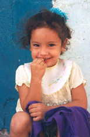

Search this website
Contents
(Our
thanks to Bruce Greenberg for the original organization of the contents
of this site.)

Most frequently requested pages
Articles on this website,
alphabetically organized
(Contents are roughly organized by key word or topic, and are not
exact.
We will be getting this page better organized in the future.)
A
Atlanta
goes to Cuba
Atlantans to
help bring relief to Cuba's Jews.
Argentine
Rabbi Ignites Fervor in Dormant Jewish Community
by Kenneth Bandler. One man's monumental contribution to the Jewish
community's renaissance.
Awards and
mutual links
Recognition of this site from different sources and some mutual
links.
B
Brief History
of Judaism in Cuba
by Anthony P. Maingot. Excerpt from a review of Robert M. Levine's
Tropical Diaspora.
Bibliography:
Latin American Jewish Studies
Judith Laikin Elkin's compilation of resources devoted to Latin
American Jewry.
C
Cuban Jews
Establish New Life in Miami by Betty Heisler-Samuels.
In the early 1960's, Cuba's Jews uproot their lives and successfully
transplant in Miami. Read stories about several interesting individuals.
Cuban Jewish
Community in Miami
Caroline Bettinger-López demonstrates how Miami's Cuban Jewish
community recreates its former tightly-knit community of the island.
Cuban Jews
Celebrate Center's Renovation and Community's Revival
The Patronato is renovated and rededicated through the efforts
of the JDC. These acts reflect the strong tide of Jewish revival
in Cuba.
Communities
Reclaim Properties as Local Jewish Needs Multiply.
by Kenneth Bandler. Synagogues are returned to the Jewish communities.
Cuban Jews
Survive in the Revolutionary Desert
Dan Freedman reviews the relationship between Cuba's communist
government, and discusses the reopening of the Patronato.
Cuba's Jews:
Rebuilding a Religion
by Michelle Bearden. "Every month, José Zaak boards
a crowded bus for the eight-hour ride from Camaguey to Havana..."
Camaguey's
New Synagogue
by David Abel. The first new synagogue in Cuba since the revolution.
Conditions
of Recent Cuban Olim
Eitan Behar responds to an online article about the future of Cuban
Jews.
Cuban
Baal Kore is Welcomed by his Community
For the first time in two generations, the torah will be chanted
in a Cuban voice.
Cuban Shul
Joins Conservative Movement
Affiliation is, yet, another step towards the rejuvenation of Judaism
on the island.
Counting
Shadows: A Broader Look at Cuban Jewish History
by Robert M. Levine. The complexity of Cuban Jewish history.
Canadian Jewish
Congress Continues Tradition of Chesed to Jewish Community in Cuba
Passover Haggadah inspires CJC to ensure that Jews in Cuba may partake
in the annual Passover seder.
Camaguey
David Abel's article on the first new synagogue since the revolution.
The Cuban
National Anthem
Words and music.
The Cuban
Shield
The meaning of the Cuban Shield.
For Cuban
Jews, endless deprivation
By Steve Fainaru. As deprivation continues, Judaism reawakens throughout
Cuba's Jewish community.
Cuba's small
Jewish community keeps the faith
CNN's 1998 overview of the struggle to keep Judaism alive in
Cuba.
Who are
the Crypto-Jews
by Daniel P. Faigin. "Any marranism in Fidel Castro's family
would be through his mother...."
Despite
grievances, Cuban olim feel lucky to be in the Jewish state
(Jewish Telegraph Agency) A return to their roots leads these Cubans
to Israel.
Paper Reviews
Hometown Author's Study of Miami's Cuban Jewish Community
Ron Beasley of the pinecrest Tribune describes how Caroline Bettinger-López's
study culminated into her book, Cuban-Jewish
Journeys
Exiled Twice--Authors
Reveal Cuban Jew's Dual Sense of Alienation
Fabiola Santiago reviews Cuban-Jewish Journeys
by Caroline Bettinger-López and The
Last Minyan in Havana by Betty Heisler-Samuels.
First-Time
Author Bettinger-López Explores Cuban-Jewish Life in Miami
by Rabecca Cross. Research of Miami's Cuban Jewish community for
recent book leads to entering Columbia
Law School.
D
Cuba's
other exiles: Cuban Jews started over in Dallas
E
The
Aftermath of the Elian Gonzales Affair: A Jewish Perspective
by Dana Evan Kaplan.
Although 90% of the Jewish community fled Cuba during the early
years of the revolution, the remaining community never faced repression
as a result of their Judaism.
F
Family
Ties
A Jewish family begins to investigate its Cuban roots. Return to
this frequently-updated site to learn the latest on the process
of reconnecting.
H
Hundreds
of Hispanics return to Jewish roots
A Miami Herald article by Daniel Shoer-Roth
Hava Nagila
Listen to everyone's favorite song!
Hebreos
Letter from Havana - discusses Jewish history in Cuba with the Coppelia
ice cream parlour as its point of departure.
Hotel Cuba
by Robert M. Levine. The making of an oral Jewish history of pre-revolution
Cuba.
Havana Nagila,
the Film
by Michael Fox. "...the video tells the story of the Jews who
stayed in Cuba."
Havana Nagila:
The Jews in Cuba
A video
documentary by Laura Paull and Evan Garelle "that traces the history
and presence of the Jewish Community in Cuba."
Hatikva
The National Anthem of Israel
I
What has
India to do with Cuba?
Dr. Yehuda Kadar Shaheb offers an historical explanation.
J
JDC-Trained
Cuban Baal Kore is Welcomed By His Community
Joint Distribution Committee lends support to "Jewish renewal on
a community level."
The Jews of
Camaguey
John Josephs describes his quest how what started as a vacation
became a religious journey.
Jews of
the Caribbean
Enrique Fernandez presents similarities and differences between
the Cuban Jewish and gentile Cuban communities.
Jewish Gateway
to the Americas
This comprehensive article from the Cox News Service and Nando.net
provides a historical background of the movement of Jews from Europe
through the Caribbean and into the States.
Jewish
Solidarity
Eddie Levy's energetic organization works through controversy to
provide assistance.
Judaism in
Cuba 1959-1999: A Personal Account
by Moisés Asís. "There was an incident that changed
my life...in Lenin Park, south Havana..."
Jewish Youth
Lead the Way
by Kenneth Bandler. The reawakening of Jewish life in Cuba unfolds
in this enlightening article.
Jewish Youth
Lead the Way
Kenneth Bandler describes the revival of the Jewish community.
World Jewry
Many links to other Jewish communities throughout the world.
Excerpt from
a Virtual Jerusalem article
From the World Jewish Congress. A brief history of the Jews
in Cuba.
L
La Comunidad
Hebrea de Cuba
A book by Margalit Bejarano recounting the collective memories of
Cuban Jews from the beginning of the 20th Century until 1959.
Letter
from "Yolanda"
"I have mixed feelings about all this because they are helping Castro.
As a Cuban I can tell you that I'm against this sort of trip...."
My Friend Luis
by Arturo López Levy
Homage is paid to a pillar of the Havana Jewish Community.
M
The Last
Minyan in Havana
by Betty Heisler-Samuels. A story about a Polish Jewish immigrant
family in Cuba during the 40's and 50's. Based on the author's family
in pre-revolution Cuba. Click here
for more information.
Miamian's
Book Recalls Life of Jews in Cuba
by Hindi Diamond. A Miami Herald review of Betty Heisler-Samuels'
novel, The
Last Minyan in Havana
Millennieum
in Cuba
June Safran reports on her recent visit with the Jewish communities
in Cuba.
Movies:
Three
Movies Produced by Bonnie Burt
The Believers; Abraham and Eugenia; Trip to Jewish Cuba.
Film Reviews
by Ruth Behar
A perceptive analysis of The Believers; Abraham and Eugenia; and
Havana Nagila.
Review
by Michael Fox
Fox analyzes Havana Nagila from another perspective.
A Review
of Abraham and Eugenia: Stories from Jewish Cuba
Paul Kaplan reviews the Bonnie Burt Film
A Review
of The Believers: Stories from Jewish Havana"
Larry Kanter reviews the Bonnie Burt Film
Movies
on the Revival of the Jewish Community in Cuba
Filmmakers are moved by Cuba's Jewish community.
N
No Todos
Nos Fuimos (Not all of us left.)
Miriam Greenberg finds that the young generation wants to explore
its community's history.
O
ORT returns
to Cuba after 40 years
World ORT Union concludes agreement to return to Cuba.
P
(includes photo
pages)
Photos
from Cuba
Recent photographs taken in Cuba.
A
Photo Tour of Cuba
One of the first collections of photos of Cuba on the net, saved
here for reference.
More Pictures
from Paul Margolis
A kaleidoscope of Jewish Cuba photos.
Even More
pictures from Paul Margolis
Guantanamo and other places
Still More
Pictures from Paul Margolis
Santiago de Cuba
Photos by
Mindy Shapiro
View of Jewish Cuba, page 1.
Photos by
Mindy Shapiro
View of Jewish Cuba, page 2.
Pictures
by June and Bob Safran
Scenes from a rejuvenated Jewish community.
Pre-Revolution
Photos
Photos from Robert Levine's Tropical Diaspora
Photos by a Jewish visitor
Jewish communal sites in Cuba
Photos
by Jacqueline Davidow
Pictorial Essay on Jewish Life in Cuba
R
Return
to Havana
Cantor Michael M. Mandel returns to Cuba 37 years after his family's
departure.
S
Synagogue
in Santiago de Cuba
by Leslie Pearl. Small Jewish congregation in Cuba's mountainous
eastern area "reverberates" with the Jewish faith.
She Lay Dead
in the Crushed Guinea Grass
Story by Larry Daley, a Cuban-Jewish writer. A personal story with
historical perspective.
T
Tropical
Diaspora
Robert Levine's comprehensive study on Jewish history in Cuba.
Tropical
Remnants: The Architectural Legacy of Cuba's Jews by Paul
Margolis.
A brief description of the Cuban Jewish communities.
Trading
with the Enemy: A Yankee Travels Through Castro''s Cuba
by Tom Miller.
The author describes his encounters with Cuba's Jewish community.
U
Un Recuerdo
de Abraham
by Bonnie Burt. Good-bye to a friend and a Jewish leader of the
observant Havana Jewish community.
Articles
on external websites
(These links
will open a new browser window.)

The
Madison-Camaguey Jewish Connection Project
Greenfield Hebrew Academy Jews in Cuba Project
Eitan/Jorge
Cuban Jew embraces Judaism, coordinates Jewish youth group and,
then, makes aliyah to Israel with his family.
Joint
Distribution Committee Projects in Cuba
Search the JDC site for articles on their work in Cuba (15 articles
at last count).
Department
of Treasury licensing requirements for legal travel to Cuba.
This is a link to Treasury's informational and required documents,
in PDF files, including "Comprehensive Guidelines for License
Applications to Engage in Travel-related Transactions Involving
Cuba."
Cuban
Jews Make Aliyah
Search the Jewish Agency for Israel's (JAFI) site for articles on
Cuban immigration (87 articles at last count).
400
Cuban Jews Secretly Move to Israel
Sample article from JAFI.
Literary
and Other Works of Ruth Behar
A comprehensive list of books and poetry written by Dr. Behar, including
research on Sephardic Jews.
Synagogues
of Cuba
Sue Gersten's photographs and addresses
of synagogues in Havana.
Jews
of the World From Harry Leichter's "All
Things Jewish" Includes a separate "Jews of Cuba"
site.
Jewish
Life in Cuba
Dan Heller's site that presents Jewish life in Cuba as it exists
today.
Cuba
Megalinks
A wealth of Cuban resources (in Spanish).
Shalom
Online
A plethora of information about Jewish Communities in Latin America
(in Spanish).
soc.culture.cuba
A newsgroup with many participants who have an extensive knowledge
of Cuba.
Articles
in Spanish
Adaptación
de los Judíos Cubanos en Israel
Eitan Behar describes the common path of Cuban Olim and opines on
different paths.
Travesías
Judeo-Cubanas. En busca de identidad, hogar e historia en Miami
Caroline Bettinger-López, por Ron Beasley
Travesías
Judeo-Cubanas.
Caroline Bettinger-López, por Rabecca Cross
Exiliados dos veces. Autores revelan
doble sentido de alienación de los judíos cubanos
Betty Heisler-Samuels
Judios
Cubanos Celebran la Renovacion del Centro Comunitario
y el Renacimiento de la Comunidad
Adaptación de los Judios Cubanos en Israel
Eitan
Behar
Los
Sefaradíes, Pioneros de la Inmigración Judía a Cuba
Margalit
Bejerano, WZO
Mi
Amigo Luis
Arturo López Levy
Historia
de los Judíos en Cuba / "Subir" a Israel
Alberto Báez Esquenazi
Comunidad
Hebrea Hatikva
Santiago de Cuba, Cuba
Prensa
Latina Especial: Religion en Cuba, 1996
Prensa Latina,
S.A.